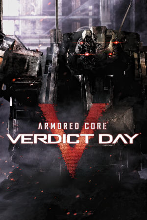

PlayStation 3, Xbox 360
Originally released on September 24th, 2013 for the PlayStation 3 and Xbox 360, Armored Core: Verdict Day is a mecha action game developed by FromSoftware and published by Namco Bandai Games. It is a direct sequel to Armored Core V, carrying over that game's overhauled mechanics while deepening the multiplayer focus with a new persistent faction war. Players pilot customizable Armored Core mechs through missions set 100 years after the events of Armored Core V, in a world where rival factions fight over remaining natural resources. The core loop combines mission-based combat with deep assembly customization: 150+ parts across legs, arms, cores, heads, weapons, and boosters let players tune their machines for speed, armor, or firepower.
The game's signature addition was the UNAC system, an autonomous AI-controlled ally mech that players could program and tune, alongside the Verdict War, a persistent multiplayer mode in which squads of up to 20 members battled for control of territories on a shared world map. Verdict Day was the final mainline Armored Core title FromSoftware produced for that console generation, and it closed out the series' long-running continuity until the franchise was revived with Armored Core VI: Fires of Rubicon in 2023. While reception was mixed, with critics citing dated presentation, the game earned a devoted following for its demanding combat and unmatched mech customization.
FromSoftware
- Official developer website.
Armored Core Wiki
- Contains lots of useful information about Armored Core games.
RPCS3 - The best PS3
emulator.
xenia - The best Xbox 360
emulator.
Armored Core: Verdict Day Manual (JP, PS3)
- PDF copy of the PS3 manual in Japanese.
Armored Core: Verdict Day Manual (JP, 360)
- PDF copy of the of the Xbox 360 manual in Japanese.
Steam Grid DB (ACVD) - Contains lots of cool options for artwork that can be used in your Steam library.